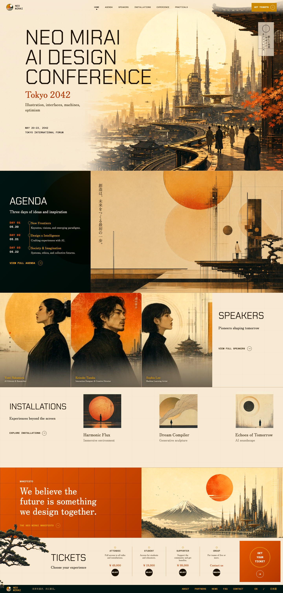

Composition matching
The build preserved the mock's asymmetric rhythm: full-bleed hero artwork, dark agenda block, orange manifesto band, drifting installation grid, and structured ticket field.
A retro-futurist AI design conference became a real static site through the full Impeccable loop: visual reference, brand direction, implementation, asset regeneration, responsive fixes, animation polish, and browser verification.



The build preserved the mock's asymmetric rhythm: full-bleed hero artwork, dark agenda block, orange manifesto band, drifting installation grid, and structured ticket field.
Image-native pieces stayed image-native. The manifesto city, speaker portraits, pine overlay, and supporting illustrations were regenerated or isolated where raster detail mattered.
The page was tested in the browser after each pass. Overlaps, bad crops, active nav state, speaker carousel behavior, mobile heights, and large-viewport balance were fixed visually.
/impeccable craft is the right command when a feature needs shaping, visual direction, implementation, and browser iteration in one run.
/impeccable craft retro-futurist AI design conference website